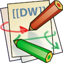

Applications
Known supported applications
Applications listed bellow are known to be easy to integrate in Lemonldap::NG. As Lemonldap::NG works like classic Web-SSO (like Siteminder™), many other applications are easy to integrate.
| Description | Procedure | |
|---|---|---|
| Bugzilla | Bug tracker | Procedure |
| Dokuwiki  | PHP Wiki | Procedure |
| Drupal | CMS | Procedure |
| GLPI | Information Resource-Manager | Procedure |
| GRR | Management of resource reservation | Procedure |
| Liferay | J2EE portal motor | Procedure |
| Mediawiki | PHP Wiki | Procedure |
| OBM | Groupware | Procedure |
| phpLDAPadmin | LDAP management | Procedure |
| Sympa | Mailing lists motor | Procedure |
| Zimbra | Groupware | Procedure |

Connectors
| Description | Procedure | |
|---|---|---|
| HTTP Auth-Basic | HTTP Basic Autentication is a standard authentication mechanism used by many web servers (Apache, IIS, …) and by many applications (Nagios,…) | Procedure |
| Spring | Spring Security is a security framework for J2EE applications | Procedure |
| Tomcat | Servlet container | Procedure |
SAML connectors
| Description | Procedure | |
|---|---|---|
| Google Apps | Gmail, Calendar, … | Procedure |